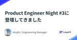

LayerX エンジニアブログ
https://tech.layerx.co.jp/
LayerX の エンジニアブログです。
フィード
Developers Summit 2024 #devsumi 協賛・登壇レポート 1
1
LayerX エンジニアブログ
こんにちは、すべての経済活動をデジタル化したい @serima です。 先日開催されたDevelopers Summit 2024にゴールドスポンサーとして協賛し、セッション登壇とブース出展を行いました。イベントの様子や登壇内容、参加者からの感想などをレポートしたいと思います。 ビジネスドメインの拡大を実現するバクラクシリーズでのモノレポ開発 コンパウンドスタートアップを志向する当社が、バクラク事業においてモノレポを実践をするに至った経緯や現在地点について、バクラク事業部 CTO 中川から発表いたしました。 発表資料はこちらからご覧いただけます。 speakerdeck.com セッション参加…
3日前

Product Engineer Night #3 に登壇してきました 2
LayerX エンジニアブログ
こんにちは、高江（@shnjtk）です。 バクラクビジネスカードの開発チームで EM をやってます。 先日開催された Product Engineer Night #3 に登壇してきましたので、発表内容についての補足とその後のディスカッションを通して感じたことなどを参加レポートとして書いてみたいと思います。 イベントはこちら product-engineer.connpass.com 登壇 : コンパウンドスタートアップにおける新規プロダクトの0→1開発 資料はこちらです。 speakerdeck.com 今回は、バクラクビジネスカードの立ち上げとして0→1開発をどのように進めたか、振り返って…
12日前
ChatGPT入門 (社内勉強会の資料を公開) 243
LayerX エンジニアブログ
こんにちは！たかぎわ @shun_tak と申します！バクラク事業で機械学習・データ領域のマネジメントを担当しています！ 先日社内でChatGPT入門の勉強会を実施して、参加者からは好評だったので、資料をこちらで共有させてください！わりと社内資料そのままコピペです。 背景 羅針盤15を体現した例 早速やってみよう！ ChatGPTを触り倒す Step1 : ChatGPTを開く (0min) Step2 : まずは挨拶してみよう！ (5min) Step3 : Google検索の代わりに使ってみよう！ (5min) 他のトピックも聞いてみよう！ Step4 : ペルソナ設定済みのGPTを使って…
14日前

今日から始めるChatGPT+Zapierで雑パーソナライズ情報収集
LayerX エンジニアブログ
皆さんこんにちは。CTOの松本です。LLM使ってますか？ChatGPT毎日触ってますか？ LLMに熱狂してすでに1年以上が経ちましたが周辺エコシステムが充実してきたことでいろいろな取り組みがとても簡単に実現出来るようになったなーと感じています。 ということで今回はZapierを使った小ネタのご紹介です。 AI・LLM事業部の今 とその前に、AI・LLM事業部での取り組みから着想を得たものでして、AI・LLM事業部について簡単に紹介させてください。 LayerXの新規事業であるAI・LLM事業部では、バクラクでも取り組んできたビジネス文書の解析の延長としてLLMを活用して文書分析エンジンの開発を…
15日前
NLP2024（言語処理学会第30回年次大会）にプラチナスポンサーとして協賛いたします
LayerX エンジニアブログ
バクラク事業部 機械学習グループのマネージャーを務めております機械学習エンジニアの松村（@yu-ya4）です。LayerXは、NLP2024（言語処理学会第30回年次大会）にプラチナスポンサーとして協賛いたします。 NLP2024は現地とオンラインのハイブリッド開催が予定されており、私を含む数名のメンバーで現地会場を訪れる予定です。LayerXがNLPに参加するのは昨年に引き続き2度目となります。本年もNLP界隈の皆様との交流を深めさせていただければと思っておりますので、何卒よろしくお願い致します。 NLP2024概要 NLP2024（言語処理学会第30回年次大会）は、日本における自然言語処理…
16日前
LayerXは未踏会議2024 MEET DAYにて登壇・ブース出展します
LayerX エンジニアブログ
Engineering Officeの @serima です。 LayerXは2024年3月10日(日)に開催される未踏会議2024 MEET DAYにて、登壇およびブース出展いたします。 開催概要 日時: 2024年3月10日（日）10:00～17:00（受付開始 9:30） 【展示】10:00～17:00 【ライブ配信プログラム】10:00～15:00 会場: ベルサール秋葉原（入場無料） 〒101-0021東京都千代田区外神田3-12-8住友不動産秋葉原ビルB1・1F・2F オンライン視聴: ニコニコ生放送、YouTube LIVE（視聴無料） 主催: 独立行政法人 情報処理推進機構（I…
19日前
【DEIM2024参加レポート】LayerXにおける機械学習技術の活用事例に関する発表内容やセッションの紹介など
LayerX エンジニアブログ
機械学習エンジニアの吉田です。 この記事は DEIM2024 (第16回データ工学と情報マネジメントに関するフォーラム) の参加レポートとなります。LayerXは昨年に引き続きプラチナスポンサーとして協賛させていただきました。 tech.layerx.co.jp 今年は 2月28日(水) ~ 3月1日(金) にオンラインによる一般発表セッションの後、土日を挟んで 3月4日(月) ~ 3月5日(火) に兵庫県姫路市にあるアクリエひめじで開催されました。 姫路でのオンサイトではチュートリアルやインタラクティブセッション (ポスター) のほかネットワーキングなどの参加型企画が行われました。 技術報告…
21日前
DEIM2024（第16回データ工学と情報マネジメントに関するフォーラム）にプラチナスポンサーとして協賛します
LayerX エンジニアブログ
バクラク事業部 機械学習グループのマネージャーを務めております機械学習エンジニアの松村（@yu-ya4）です。LayerXは、DEIM2024（第16回データ工学と情報マネジメントに関するフォーラム）にプラチナスポンサーとして協賛いたします。 DEIM2024 バーチャル背景 また、技術報告としてバクラク事業のAI-OCR機能やAI・LLM事業における取り組みなど、LayerXにおけるAI・機械学習技術の活用事例についての発表や、DBSJ学生企画における登壇も予定しております。さらに、現地開催となる４、５日目は私を含む数名のメンバーで会場を訪れ、データベース界隈の皆様との交流を深めさせていただ…
24日前
Vertex AI Pipelinesのデプロイ戦略を考える
LayerX エンジニアブログ
こんにちは。 バクラク事業部、機械学習チームでテックリードをしている島越@shimacosです。 今年になってギックリ腰になってしまい、整体とパーソナルジムに通い始めました。 チームメンバーには島腰といじられています。健康体になりたい。 はじめに Vertex AI Pipelinesについて デプロイ方針 落とし穴 辛い部分 最後に はじめに 機械学習チームでは、機械学習パイプラインの作成と定期実行サービスにGoogle Cloud Platform(GCP)のVertex AI Pipelinesを採用しています。 前回までの軌跡はこちらで紹介しています。 tech.layerx.co.j…
1ヶ月前
グループ企業間で使うSlack Botと脅威ベースのリスク評価 - Entra ID編
LayerX エンジニアブログ
ドーモ、読者のミナ＝サン、@ken5scalです。 今回はLayerXと、Fintech事業部のメンバーが出向する三井物産デジタル・アセットマネジメント（以降、MDM）をまたがる業務システムと、それに伴うリスク評価および発見的統制についてお話したいと思います。 これにより、コンパウンドスタートアップなグループ会社をまたがって必要とされる業務のデジタル化、 そしてその初期からの安全への取り組みについて紹介していきます。 業務 先述した通り、MDMはグループ会社です。 そこにはLayerXの代表取締役社長の一人（@y_matsuwitter）も非常勤取締役として出向しています。 私自信もLayer…
1ヶ月前
LayerXはソフトウェアテストシンポジウム2024 東京（JaSST'24 Tokyo）にゴールドスポンサーとして協賛します
LayerX エンジニアブログ
LayerXは2024年3月14日（木）〜 3月15日（金）に開催されるソフトウェアテストシンポジウム（JaSST ： Japan Symposium on Software Testing）にゴールドスポンサーとして協賛しメンバー5名が参加します。 ソフトウェアテストシンポジウム（JaSST ： Japan Symposium on Software Testing）について 「ソフトウェアテストシンポジウム（JaSST ： Japan Symposium on Software Testing）」は、ソフトウェアテスト分野の最新の研究や実践事例の発表をはじめ、ツールの適用事例や活用ノウハウ…
1ヶ月前
LayerXはDevelopers Summit 2024にゴールドスポンサー＆ブーススポンサーとして協賛します
LayerX エンジニアブログ
Engineering Officeの@serimaです。 LayerX は、Developers Summit 2024にゴールドスポンサー＆ブーススポンサーとして協賛します。 また、LayerX 代表取締役CTOの松本と、バクラク事業部CTOの中川も登壇を予定しています。 タイトル：生成AIを本気で推進するトップランナーが語る！AIの展望2024年とその先 モデレーター：PIVOT株式会社 プロダクトマネージャー 蜂須賀 大貴さま スピーカー 株式会社Algomatic 取締役 CTO 南里 勇気さま 株式会社メルカリ 執行役員 VP of Generative AI / LLM 石川 佑…
1ヶ月前
YAPC::Hiroshima 2024に参加しました！#yapcjapan
LayerX エンジニアブログ
こんにちは、バクラク事業部エンジニアの@shirakiy0です。 先日開催されたYAPC::Hiroshima 2024に参加してきました。 ブログを書くまでがYAPC、ということで参加ブログを書いていこうと思います。 LayerXとYAPC::Hiroshima 2024 今回のYAPC:HIroshima 2024にはプラチナスポンサー&学生支援スポンサーとして協賛しました。 協賛の背景等についてはこちらをご覧ください。 tech.layerx.co.jp また、ノベルティとして負債解消ストレッチバンドを配布させていただきました。会場で受け取られた方は、身体の負債も一緒に返済していきましょ…
1ヶ月前
YAPC::Hiroshima 2024にてゲストスピーカーで登壇しました #yapcjapan
LayerX エンジニアブログ
こんにちは、CTOの松本 (@y_matsuwitter)です。 少しずつスクワットの重量が伸びていて嬉しい今日このごろです。 さて、昨日（2024/02/10）開催されましたYAPC::Hiroshima 2024にてゲストスピーカーとして登壇してきました。 実はYAPC初参加でしたが、受容力ある素敵なコミュニティだと感じた2日間でした。 今回はLayerXからスポンサーもさせていただきましたが、運営の皆様素敵なカンファレンス、ありがとうございました。 tech.layerx.co.jp ちなみに連日、旬の牡蠣を食べました。広島は美味しい街です。 経営・意思・エンジニアリング 今回の登壇では…
1ヶ月前
LayerXとMDMの異なる魅力とチャレンジ as コーポレートシステム
LayerX エンジニアブログ
始めに LayerXにはFintech事業部門があり、所属社員は三井物産デジタル・アセットマネジメント（以降、MDM） に出向しています。 今日はこのFintech事業部門・MDMのCTO室的存在について、スポットを当てたいと思います。 それぞれにセキュリティとコーポレートシステム機能をもつ部門が存在していますが、基本的には同じ方針、同じ優先順位でことに当たっていました。 それは何故でしょう？ 身も蓋もないことをいうと、それぞれにおいて創業間もない時期から、私という同一の人間が兼任していたからです しかし、新たにLayerXのCTO室長（※）も迎えた今のステージにおいては、それぞれが目指す方向…
2ヶ月前
LayerXはYAPC::Hiroshima 2024にプラチナスポンサー＆学生支援スポンサーとして協賛します
LayerX エンジニアブログ
Engineering Officeの@serimaです。 LayerX は、YAPC::Hiroshima 2024にプラチナスポンサー＆学生支援スポンサーとして協賛します。 また、LayerX 代表取締役CTOの松本（@y_matsuwitter）がゲストスピーカーとして登壇（40分）、バクラク事業部エンジニアリングマネージャーの新多（@ar_tama）も登壇（20分）を予定しています。 タイトル：経営・意思・エンジニアリング（仮） スピーカー：代表取締役 CTO 松本 @y_matsuwitter 日時：2024/02/10 11:00〜11:40 場所：厳島（ダリア） タイトル：新任エ…
2ヶ月前
「体の負債をリファクタリング！」新たなノベルティに込められた想いを添えて
LayerX エンジニアブログ
すべての経済活動をデジタル化したい、バクラク事業部 Engineering Officeの @serima です！ 今回新たに「負債解消ストレッチバンド」というノベルティをデザイナーの@pommesと一緒に作成させていただきました。まずは、LayerXがスポンサードしているYAPC::Hiroshima 2024やDevelopers Summit 2024にて、配布させて頂く予定です！ 負債解消ストレッチバンド 本エントリでは、上記イベントにお越し頂く方や既にノベルティを受け取った方向けに なぜこのノベルティを作成したのか？ ノベルティを通じて何を伝えたかったのか？ ストレッチバンドの使い方…
2ヶ月前
開発観点からプロダクト価値を最大化する〜バクラク新CTOのミッション〜
LayerX エンジニアブログ
こんにちは！ 2024年1月より現 CPO の榎本（mosa）から引き継ぎ、バクラク事業部 CTO に就任した中川佳希です。 今回の記事では、CTO としてそのミッションを定めた背景とこれからのバクラクの開発について書いていきます。 あわせて引き継ぎや今後の開発について、Podcast も収録しています。こちらもぜひ！ open.spotify.com 自己紹介 大学在学中に複数企業でインターンを経験し、2013年に株式会社エウレカに入社しました。その後フリーランスを経て、2020年6月に LayerX にジョインしました。 入社前の LayerX はブロックチェーンのイメージが強く、技術課題…
3ヶ月前
エンジニアのオンボーディングを加速させる新入社員の立ち回りと施策 #LayerXテックアドカレ
LayerX エンジニアブログ
こんにちは！バクラク事業部 電子帳簿保存のエンジニアリングマネージャーをしている菊池 (@kichion)です。最近3歳の息子に「パパァ〜、そんなこともできないのぉ〜、ふふふっ」となじられることに快感を覚えているこの頃です。 この記事はLayerXテックアドカレ（概念）の50日目の記事です。昨日は id:sadayoshi_tada さんの「re:Invent2023 で登場した AWS Backup Restore testing でリストア検証を手軽に始める」をお届けしました。11月から始まったテックブログのリレーもゴールです。 私は2023年4月に入社して、7月にエンジニアリングマネージ…
3ヶ月前
re:Invent2023 で登場した AWS Backup Restore testing でリストア検証を手軽に始める #LayerXテックアドカレ
LayerX エンジニアブログ
こんにちは！バクラク事業部 Platform Engineering 部 DevOps チームの id:sadayoshi_tadaです。今期の呪術廻戦のアニメは原作にない描写が描かれてて最高でした。 この記事は LayerXテックアドカレ 49日目の記事です。前日は id:watau_lx さんによる 継続的なパフォーマンス改善のプロセスを紹介します でした。明日は kakeruさんが担当します。この記事では AWS の学習型カンファレンスである、re:Invnent 2023 で登場した AWS Backup Restore testing を検証した内容をまとめていきます。なお、re:I…
3ヶ月前
継続的なパフォーマンス改善のプロセスを紹介します #LayerXテックアドカレ
LayerX エンジニアブログ
こんにちは、バクラクの請求書受取・仕訳チームでソフトウェアエンジニアをしている id:wataru_lx です。 年末は毎年そばを打っており、今年は十割そばに挑戦します！成功したことはありません。 この記事はLayerXテックアドカレ（概念）の48日目の記事です。昨日は@coco_tyw さんの「VeeValidate v4 の破壊的変更を互換コンポーネントで乗り切った話」をお届けしました。明日は id:sadayoshi_tada さんが担当します。 ありがたいことに、利用されるお客様やシステムで処理する請求書の数も日々増加しており、それに伴いパフォーマンスに関するお問い合わせも増えています…
3ヶ月前
VeeValidate v4 の破壊的変更を互換コンポーネントで乗り切った話 #LayerXテックアドカレ
LayerX エンジニアブログ
こんにちは。LayerX バクラク事業部 バクラク請求書受取・仕訳チーム エンジニアの coco です。最近人生で初めてクリスマスにプレゼントをするということをしました。喜んでもらえると嬉しいものですね。 この記事は LayerXテックアドカレ2023 47日目の記事です。 前回は同じく バクラク請求書受取・仕訳チーム の noritama さんが 「BurpSuiteを使ってサクっとWebアプリケーションの脆弱性診断を実施する」を書いてくださいました。 次回も同チームの wataru さんが書いてくれる予定なのでご期待ください！ 今回は バクラク請求書受取・仕訳チーム で行った Vue3 移…
3ヶ月前
後回しにされがちな問題を改善するための「改善デー」「やさしさデー」のご紹介 #LayerXテックアドカレ
LayerX エンジニアブログ
こんにちは。バクラク申請・経費精算エンジニアの@upamuneです。12/24日のM-1グランプリの敗者復活戦を軽い気持ちで見に行ったら、パイプ椅子に7時間座ることになって腰がやられました。 この記事はLayerXテックアドカレ2023の43日目の記事です。 私はなぜか3日分もテックアドカレに入れてしまったのですが、3回目の今回は「改善デー」「やさしさデー」という取り組みの話を紹介しようと思います。 「改善デー」とは 弊チームでは「改善デー」という名前のイベントを約1ヶ月に1度のペースで開催しています。これは、チームメンバーが「普段改善したいと思っているけど、中々できていないことをやる日」です…
3ヶ月前
BurpSuiteを使ってサクっとWebアプリケーションの脆弱性診断を実施する #LayerXテックアドカレ
LayerX エンジニアブログ
こんにちは、バクラク請求書受取チーム エンジニアの @noritama です。 今年は無事に結婚でき、めでたい1年となりました。 この記事は LayerXテックアドカレ (概念) 46日目の記事です。昨日は uehara さんの 「マイクロサービス環境における Amazon OpenSearch Serverless のポリシー設計 #LayerXテックアドカレ - LayerX エンジニアブログ 」でした。 今回はBurpSuiteを使って脆弱性診断が可能かを検証した話をします。 BurpSuite https://portswigger.net/burp 今回の検証では Burp Suit…
3ヶ月前
バクラクの爆速開発を支えるDevOpsチームの「のびしろ」！ #のびしろウィーク
LayerX エンジニアブログ
こんにちは！バクラク事業部DevOpsチームです。 この記事は LayerXテックアドカレ2023 の37日目の記事です、前回はid:kikuchyさんが『歳末！バクラク申請・経費精算モバイルアプリ のびしろ大放出祭 』という記事を書いてくれました。また、38日目はid:suguruが『バクラク Enabling Team の課題とのびしろ #のびしろウィーク』を書いてくださいました！ 今回はのびしろウィークということで、バクラクのDevOpsチームの伸びしろをお伝えできればと思います！ のびしろウィークとは のびしろウィークとは、LayerXの各チームメンバーが自分たちのチームの「のびしろ」…
3ヶ月前
マイクロサービス環境における Amazon OpenSearch Serverless のポリシー設計 #LayerXテックアドカレ
LayerX エンジニアブログ
バクラクで導入した Amazon OpenSearch Serverless のポリシー設計について紹介します。
3ヶ月前
LayerXののびしろ、2023年を振り返る #LayerXテックアドカレ #のびしろウィーク
LayerX エンジニアブログ
LayerXののびしろ、2023年を振り返る こんにちは、LayerX CTOの松本です。今年のクリスマスイブもひたすら料理していました。息子とパンを捏ねて焼くのは楽しいですね。出来上がったパンをたくさん食べくれたのが微笑ましかったです。 この記事はLayerXテックアドカレ（概念）の44日目の記事となります。昨日はnaoの「コンパウンドスタートアップにおけるQAチームの課題とのびしろ #LayerXテックアドカレ #のびしろウィーク」をお届けしました。ちなみにアドベントカレンダーと名乗っていますがもう44日目ですし、更にはクリスマスを超えて明日以降も続くそうです。 さて、昨年もこのタイミング…
3ヶ月前
コンパウンドスタートアップにおけるQAチームの課題とのびしろ #LayerXテックアドカレ #のびしろウィーク
LayerX エンジニアブログ
こんにちは！このブログを書くにあたり、LLMに「のびしろ」のいい感じの挿絵画像をリクエストしたら縦長のお城の絵が生成されました。バクラク事業部QAチームの nao です。 この記事は LayerXテックアドカレ2023 の43日目の記事です。昨日は @shun_tak さんが データ領域におけるイネーブリング活動と課題について について書いてくれました。そちらもあわせてご覧いただければと思います！ 「のびしろウィーク」ということで、QAチームの活動で目指したい方向性や課題、そして伸びしろについて書きます。 のびしろウィークとは 「のびしろウィーク」とは、LayerXの各チームメンバーが自分たち…
3ヶ月前
AI-OCRパイプラインのレイテンシーモニタリングをDatadogで爆速構築した話
LayerX エンジニアブログ
この記事は MLOps Advent Calendar 2023 の22日目の記事になります。 こんにちは、バクラクの機械学習チームでソフトウェアエンジニアをしているTomoakiです。 あらゆる点でコスパが最強すぎて最近毎日鍋を食べています。今日はちゃんこ鍋ぽい何かをグツグツさせてます。 さて、今回はAI-OCRパイプラインのレイテンシーモニタリングを爆速で構築した話をしたいと思います。 バクラクのAI-OCRについて バクラクでは、請求書や領収書をはじめとする国税関係の書類にOCRを実行し、入力のサジェストを行うことで、お客様が書類の内容を手入力する手間を省略しています。 例えばこちらの領…
3ヶ月前
データ領域におけるイネーブリング活動を10か月やってみた報告と今後の課題 #LayerXテックアドカレ #のびしろウィーク
LayerX エンジニアブログ
今年の2月にデータイネーブリングはじめますという宣言をしました。 note.com また、こちらの記事にもチーム設立の背景や課題についてまとめています。 tech.layerx.co.jp 10か月活動してみて、いろいろと解像度が上がってきたので、一度まとめておこうと思い筆をとりました。 そもそもイネーブリング活動とは何か データ領域におけるイネーブリング活動とは何か この10か月にやったこと・成果・学び 課題と伸びしろ まとめ そもそもイネーブリング活動とは何か 「イネーブリング」や「イネーブルメント」という単語は、「セールス・イネーブルメント」や「チームトポロジー」の文脈での使用が広がって…
3ヶ月前